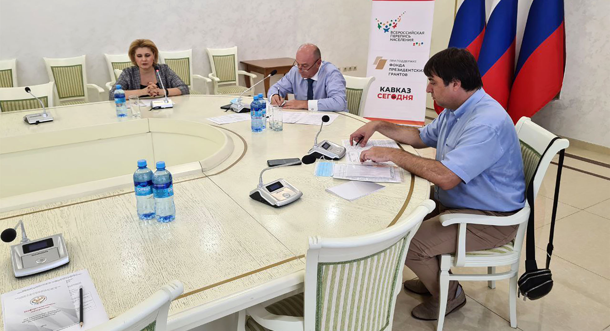
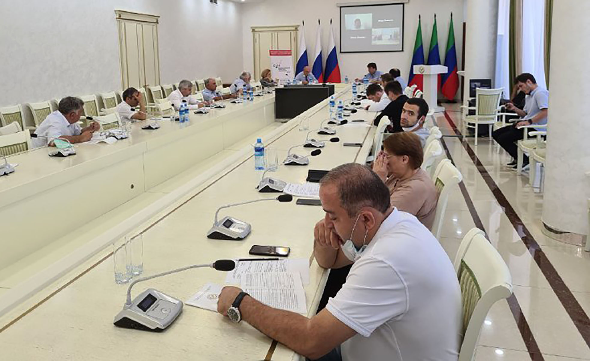

В Махачкале открыт штаб переписи населения
Экспертный круглый стол объединил представителей национальностей региона, общественников, специалистов ведомств
Всероссийская перепись населения имеет особое значение для Дагестана — самого многонационального субъекта России. Для участия в общественном наблюдении был приглашен широкий круг экспертов, общественных деятелей, представителей СМИ и профильных ведомств региона. Организатором мероприятия от республики выступило Министерство по национальной политике и делам религий Республики Дагестан.
«Автопортрет Северного Кавказа: перепись населения 2020 (2021)» — это общественный проект, который содействует решению проблемы полноты учета народов и этнических групп, соблюдению их права на национальную самоидентификацию при проведении переписи населения в субъектах СКФО.
Экспертный круглый стол объединил на площадке ГБУ РД «Дом дружбы» представителей национальностей региона, общественников, специалистов нескольких ведомств. На мероприятии присутствовали статс-секретарь — заместитель министра по национальной политике и делам религий Республики Дагестан Арсен Махмудов, начальник отдела статистики населения и здравоохранения Дагестанстата Нанав Оздеаджиева, координатор проекта «Автопортрет Северного Кавказа» Александр Джадов.
В ходе встречи участники обсудили особенности проведения Всероссийской переписи населения, новые технические и методические подходы к проведению переписей в РФ, полноту и точность учёта национального состава Северного Кавказа в ходе ВПН-2021 и региональную специфику Дагестана в переписи населения.
— Значение переписи для Дагестана — самой многонациональной республики в составе России сложно переоценить, — отметил во вступительном слове Арсен Махмудов. — Мы пригласили очень широкий круг общественных деятелей, руководителей некоммерческих организаций к обсуждению предстоящего события и надеемся, что проект «Автопортрет Северного Кавказа» станет действенным инструментом контроля за полнотой и точностью учёта населения региона.
Нанав Оздеаджиева отметила технические и методические новшества грядущей переписи. «Это первая цифровая перепись в истории России. Впервые будут опробованы новые цифровые технологии, новые методы сбора. Любой гражданин может переписаться тремя способами. Первый способ — традиционный, когда к нам домой приходит переписчик и собирает у нас информацию. Особенностью этой переписи будут то, что вместо бумажных листов переписчик будет иметь при себе электронный планшет. Вторым способом является перепись на стационарных участках. Такие будут в каждом МФЦ. Абсолютно новый третий способ переписи — самостоятельное заполнение информации о себе на портале „Госуслуги“. Для этого достаточно иметь стандартную учётную запись».